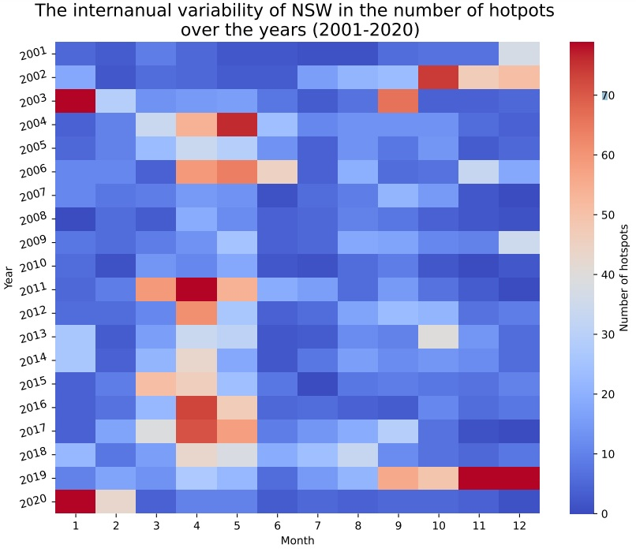

Personal Projects
One of the main driving forces behind taking a couple of years out to study before my postgraduate degree was to improve my skills in data presentation; the reason for this was that I was unhappy with how I visualised my data during my undergraduate dissertation. As I knew, there were so many different ways to display my data than simply using Microsoft excel. Therefore, I decided to challenge myself by learning python, and honing my cartographic skills in my spare time to explore its capabilities in visualising data.
The Black Summer project


Background
Regional fire regimes are an integral part of the Australian landscape, where many species of plants and animals has evolved to depend on these fire events for germination, food availability and for regeneration alike. However, since European colonisation of Australia (1788 C.E.), its landscape and management has changed considerably from place to place, causing a knock-on-effect to the risk and severity of bushfires. The Australian 2019/20 Black Summer Bushfires became the worst-case scenario of this knock-on-effect to date. Where a total area of 73,600 square miles of land was burned (almost three times the size of the Australian state of Tasmania), and a conservative estimate of 3 billion animals were lost during and after these fires.Rational
It sent down chills when first hearing about these stats, but soon followed a fascination, making me question: how and why such types of events occur. This led me to focus on these fundamentals’ questions during my undergraduate dissertation, where I assessed the role of human activity as a driver for wildfire-mediated vegetation disturbance in Western Tasmania, Australia. It was for this reason why I wanted to incorporate the Australian 2019/20 Black Summer Bushfires into my independent learning and explore different ways to model fire-related instances.